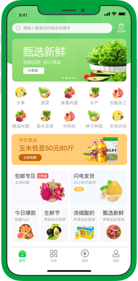

农网365
农网 365 致力于将成熟的“平台模式、供应链管理、金融服务”与涉农产业深度嫁接，打造新型涉农产业生态圈，为产业链上下游参与者持续提供专业、有效、便捷的综合性服务。
平台包括涉农产品上行所需的溯源、品控、智慧农业等技术服务，信贷、保险、互助、众筹、投融资等综合性金融服务，以及供应链、运营推广、物流仓储等运营服务，构建涉农产业全生命周期服务平台。


农网 365 致力于将成熟的“平台模式、供应链管理、金融服务”与涉农产业深度嫁接，打造新型涉农产业生态圈，为产业链上下游参与者持续提供专业、有效、便捷的综合性服务。
平台包括涉农产品上行所需的溯源、品控、智慧农业等技术服务，信贷、保险、互助、众筹、投融资等综合性金融服务，以及供应链、运营推广、物流仓储等运营服务，构建涉农产业全生命周期服务平台。
农网365的创始团队来自农业金融企业、农业龙头企业、互联网创新企业,其对农业产业链上下游的痛点、价值诉求、利益诉求、运作规则更清晰,从而可以有效的选择切入点。
展开
山西扶贫开发有限公司2018年通过周转金贷款与全省142户农业企业建立了紧密的业务联系，2019年预计有100余户享受周转金政策支持，共计约300 户农业企业纳入其项目管理库，有强大的农业企业资源整合能力。
展开
农网365对所有参与主体提供赋能,农网365通过大数据的沉淀、产业相关知识库的积累、产业链流程的优化再造、产业人才培养能力让平台各参与方在这个平台上获得比自己单打独斗有更快的能力提升。
展开卓越运营是农网365保持长久竞争力的核心。农网365将以更低的成本、更高的效率,落实到产业链上的产品品质保证、供应交付保障、客户服务体验等。
展开
农网365有优秀的金融基因和互联网技术基因，可以将精细化的流程和标准规则、供应链金融场景设计等用IT系统落地实现,并获得用户良好的体验。
展开农网365的创始团队来自农业金融企业、农业龙头企业、互联网创新企业,其对农业产业链上下游的痛点、价值诉求、利益诉求、运作规则更清晰,从而可以有效的选择切入点。
展开山西扶贫开发有限公司2018年通过周转金贷款与全省142户农业企业建立了紧密的业务联系，2019年预计有100余户享受周转金政策支持，共计约300 户农业企业纳入其项目管理库，有强大的农业企业资源整合能力。
展开农网365对所有参与主体提供赋能,农网365通过大数据的沉淀、产业相关知识库的积累、产业链流程的优化再造、产业人才培养能力让平台各参与方在这个平台上获得比自己单打独斗有更快的能力提升。
展开卓越运营是农网365保持长久竞争力的核心。农网365将以更低的成本、更高的效率,落实到产业链上的产品品质保证、供应交付保障、客户服务体验等。
展开农网365有优秀的金融基因和互联网技术基因，可以将精细化的流程和标准规则、供应链金融场景设计等用IT系统落地实现,并获得用户良好的体验。
展开